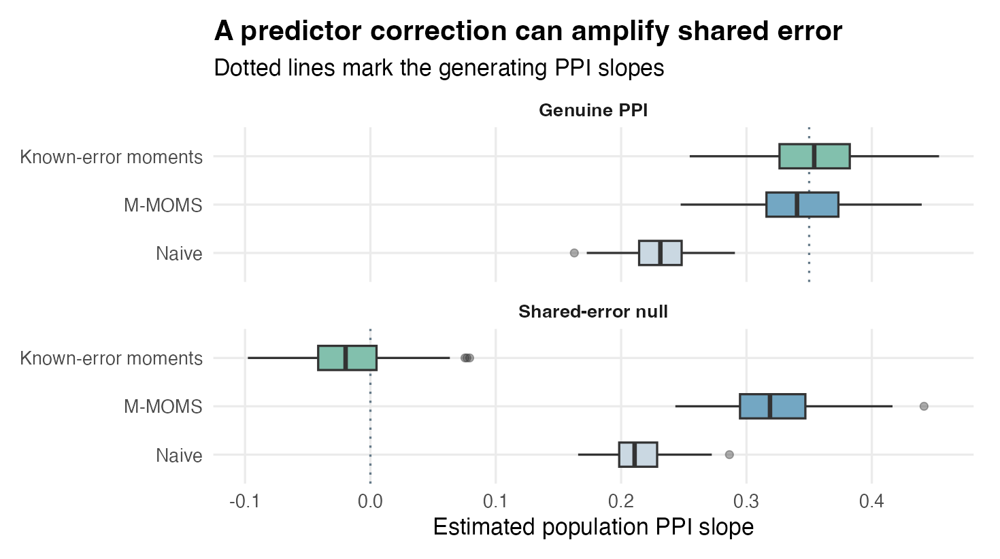

library(medusa)
ppi <- decon_connectivity_repair(
panel_dt = subject_epochs,
seed_region = "Seed",
target_region = "Target",
seed_lag = 0,
target_lag = 0,
covariates = "x_within",
test_ppi = TRUE,
orthogonalize_seed_x = FALSE,
shared_error = "auto",
method = "mmoms"
)Step 6: Trial-Level Connectivity and PPI
Overview
Whereas Step 5 places deconvolved neural activity on the left-hand side as an outcome (Neural ~ Behavior), Step 6 moves a deconvolved parcel readout onto the right-hand side (Target ~ Seed + Task + Seed:Task or Behavior ~ Seed) to test trial-to-trial functional connectivity and psychophysiological interaction (PPI).
When an estimated quantity with trial-level sampling error is used as a regression predictor, two measurement properties directly affect structural slopes (Fuller, 1987; Vig & Hallquist, 2026): predictor measurement error inflates the observed design variance \(X^\top X\) (attenuating both main connectivity and PPI interaction slopes toward zero), and any shared scanner or physiological noise between seed and target shifts the cross-product \(X^\top Y\). Step 6 (decon_connectivity_repair(), backed by medusa_fit_mmom()) subtracts Step 4’s analytical per-trial error variances (se_demixed^2) and task-free cross-parcel noise correlations (unit_error_cor / shared_noise_loading) from each participant’s sample cross-products while guarding against unstable small denominators in noisy scans (Modified Method of Moments with Step-up Regularization, M-MOMS), and then aggregates participant slopes across the cohort using finite-sample random-effects \(t\)-intervals scaled by observed between-participant slope dispersion (Hartung–Knapp–Sidik–Jonkman, HKSJ pooling).
The walkthrough below develops Step 6 in four substeps directly paralleling the REPAIR two-step moment framework: specifying the latent structural equation (6.1), constructing the trial-specific error covariance matrices (6.2), estimating participant slopes via regularized M-MOMS (6.3), and pooling across participants (6.4).
Goals, Inputs, and Outputs
Goals of Step 6
- Disattenuate noisy neural predictors and PPI product terms: Construct per-trial predictor measurement-error covariance blocks \(\Psi_i\)—capturing both heteroskedastic interaction error \(x_i^2 s_i^2\) and off-diagonal seed–interaction error covariance \(x_i s_i^2\)—and subtract them from observed design moments.
- Account for stationary cross-parcel shared measurement error: Subtract expected seed–target error covariance \(\operatorname{Cov}(u_i, v_i)\) (
shared_error = "auto") estimated from Step 4’s task-freenoise_innovations. - Support clear direct and residualized-seed PPI parameterizations: Allow analysts to choose explicitly between unresidualized seed coupling (
orthogonalize_seed_x = FALSE) and task-residualized seed coupling with exact error-covariance projection (orthogonalize_seed_x = TRUE). - Pool participant connectivity estimates with calibrated random-effects uncertainty: Aggregate participant M-MOMS slopes at the group level via leverage-guarded HKSJ random-effects inference.
Inputs: What Step 6 Receives and Why
| Input | Structure | Why Step 6 Uses It |
|---|---|---|
panel_dt |
Named subject_epochs list (preferred) or stacked group_panel (data.table / .rds / Parquet) |
Pairs seed and target trial readouts by (id, run, trial) while supplying se_demixed and Step 4’s cross-parcel noise correlations ($unit_error_cor on subject_epochs, or $panel$shared_noise_loading on stacked panels). |
seed_region, target_region, seed_lag, target_lag |
Parcel names and peri-event lags (e.g., seed_lag = 0, target_lag = 0 or lagged seed_lag = 0, target_lag = 1) |
Select the paired seed readout \(W_i\) and target readout \(Y_i\) along with their trial-specific measurement SEs. |
covariates & test_ppi |
Character vector of centered task covariates; logical test_ppi |
When test_ppi = TRUE, the first element of covariates defines the error-free psychological modulator \(x_i\) forming seed:x, while any additional covariates enter as additive controls. |
shared_error & method |
shared_error = c("auto", "supplied", "zero"); method = c("mmoms", "mmom", "naive_unweighted") |
Govern cross-parcel error subtraction and moment-matrix conditioning. |
Outputs: What Step 6 Produces and Why It Is Set Up That Way
| Output component | Structure & key columns | Role |
|---|---|---|
$group |
data.table per modeled term (seed, task covariates, ppi): estimate, std.error, statistic, df, p.value, conf.low, conf.high, tau2, n_subjects |
Reports HKSJ random-effects population slope estimates and 95% \(t\)-intervals anchored to participant degrees of freedom. |
$subjects |
data.table per (id, term): estimate, std.error, n_trials, r_shared_error, shared_error_source, regularization_lambda, converged |
Exposes each participant’s M-MOMS slope, working cross-parcel error correlation (r_shared_error), metadata source, and any step-up regularization constants. |
$panel_repair |
Optional paired trial data.table (return_panel = TRUE) |
Provides the exact centered/paired trial columns and error variances for custom plots or sensitivity curves. |
Step-by-Step Walkthrough: Substeps and Choice Points
6.1 Specify the latent trial connectivity or PPI structural equation
Within a participant (after centering seed, target, and task covariates within each run), let \(S_i\) denote true latent seed activity at seed_lag, \(T_i\) denote latent target activity at target_lag, and \(x_i\) denote an error-free centered task modulator on trial \(i\):
\[ T_i = \beta_S S_i + \beta_x x_i + \beta_P (S_i x_i) + \varepsilon_i. \]
Each coefficient answers a distinct biological question: \(\beta_S\) is baseline trial-to-trial seed–target coupling at the mean of \(x_i\) (\(x_i = 0\)), \(\beta_x\) absorbs direct task activation in the target parcel so shared main-effect responses are not mistaken for coupling, and \(\beta_P\) is the PPI slope—how much seed–target coupling changes per unit change in \(x_i\) (for \(x_i \in \{-1, +1\}\), \(2\beta_P\) is the slope difference between task conditions).
Choice point — Seed parameterization (orthogonalize_seed_x) and lagged control (control_target_at_seed_lag):
- Direct vs. residualized seed (
orthogonalize_seed_x): Settingorthogonalize_seed_x = FALSE(recommended when testing the direct structural equation above) enters centered \(S_i\) and \(x_i\) symmetrically without altering quadratic task structure. Settingorthogonalize_seed_x = TRUEfirst residualizes the seed againstcovariates(projectingdiag(se_demixed^2)through \(P D_u P^\top\)) to isolate pure task-orthogonal seed fluctuations; note that when the seed responds linearly to \(x_i\), residualizing shifts the product column by a term proportional to \(x_i^2\). - Concurrent vs. lagged Granger-style coupling (
control_target_at_seed_lag): Whentarget_lag > seed_lag, settingcontrol_target_at_seed_lag = TRUEincludes target activity atseed_lagas an additional error-corrected neural predictor so \(\beta_S\) and \(\beta_P\) test whether seed activity predicts subsequent change in the target parcel.
6.3 Estimate participant slopes via regularized Modified Method of Moments (M-MOMS)
Given observed trial vectors \((X_i, Y_i)\) and error moments \((\Psi_i, c_i)\), medusa_fit_mmom() estimates each participant’s structural coefficients in three non-iterative moment steps (Fuller, 1987; Vig & Hallquist, 2026):
- Error-corrected preliminary normal equations: Subtracts predictor error covariances from \(X^\top X\) and shared seed–target error covariances from \(X^\top Y\): \[ \left(X^\top X - c(\hat{\lambda}_1, \alpha_1)\sum_{i=1}^n \Psi_i\right) \widehat{\beta}^{(1)} = X^\top Y - c(\hat{\lambda}_1, \alpha_1)\sum_{i=1}^n \begin{pmatrix} c_i \\ 0 \\ x_i c_i \end{pmatrix}, \] where Fuller’s generalized-eigenvalue factor \(c(\hat{\lambda}, \alpha)\) prevents subtracting more error variance than the sample design matrix supports.
- Structural disturbance variance & composite trial weights: Uses \(\widehat{\beta}^{(1)}\) to estimate measurement-error-corrected structural disturbance variance \(\hat{\sigma}_\varepsilon^2\) and forms per-trial composite residual variances \(\hat{w}_i = \hat{\sigma}_\varepsilon^2 + s_{T,i}^2 - 2\widehat{\beta}^{(1)\top}\psi_{XY,i} + \widehat{\beta}^{(1)\top}\Psi_i\widehat{\beta}^{(1)}\).
- Weighted M-MOMS update & conditioning guard: Re-estimates \(\widehat{\beta}\) and sandwich standard errors using inverse composite weights \(\hat{w}_i^{-1}\). Under
method = "mmoms", an adaptive step-up search selects the smallest regularization constant \(\alpha \ge p + 1\) that keeps the corrected predictor block well-conditioned—preventing small-denominator outliers in low-reliability participants while matching unmodified M-MOM whenever signal reliability is moderate to high.
Choice point — Moment estimator (method): Use method = "mmoms" as the primary estimator, and fit method = "naive_unweighted" in the same coordinates (use_whitened = FALSE) alongside it so the magnitude of measurement-error disattenuation is directly visible.
6.4 Pool participant slopes and compare against naive regression
Across independent participants, decon_connectivity_repair() pools participant slopes \(\widehat{\beta}_s\) and standard errors using dispersion-scaled finite-sample random-effects \(t\)-intervals (Hartung–Knapp–Sidik–Jonkman, HKSJ meta-regression, with leverage protection against extreme precision weights), anchoring group degrees of freedom to the number of participants \(S\).
To see how M-MOMS behaves when disattenuating genuine trial-level PPI (Genuine PPI scenario in simulate.R: 120 simulated cohorts of \(S = 16\) participants, 2 runs × 60 trials, true population interaction \(\beta_P = 0.35\), seed and target measurement error SDs \(= 0.70\), independent errors), compare the top three rows of the benchmark table and left panel of Figure 9.1:
- Naive regression is attenuated by roughly one-third (0.230 vs. true
0.350), yielding 0.0% 95% CI coverage because tight group SEs center around the attenuated value. - M-MOMS removes the attenuation (0.343), cuts population RMSE more than threefold (from 0.123 to 0.039), and restores nominal 95.0% confidence-interval coverage.
| Scenario | Estimator | Truth | Mean | Bias | RMSE | Reject (p <= .05) | 95% CI Coverage |
|---|---|---|---|---|---|---|---|
| Genuine PPI | Naive | 0.35 | 0.230 | -0.120 | 0.123 | 100.0% | 0.0% |
| Genuine PPI | M-MOMS | 0.35 | 0.343 | -0.007 | 0.039 | 100.0% | 95.0% |
| Genuine PPI | Known-error moments | 0.35 | 0.354 | 0.004 | 0.040 | 100.0% | 95.8% |
| Shared-error null | Naive | 0.00 | 0.214 | 0.214 | 0.215 | 100.0% | 0.0% |
| Shared-error null | M-MOMS | 0.00 | 0.322 | 0.322 | 0.324 | 100.0% | 0.0% |
| Shared-error null | Known-error moments | 0.00 | -0.018 | -0.018 | 0.042 | 5.8% | 94.2% |

Recommended Settings
library(medusa)
ppi <- decon_connectivity_repair(
panel_dt = subject_epochs,
seed_region = "Seed",
target_region = "Target",
seed_lag = 0,
target_lag = 0,
covariates = "x_within",
test_ppi = TRUE,
use_whitened = FALSE,
orthogonalize_seed_x = FALSE,
shared_error = "auto",
method = "mmoms",
region_col = "parcel",
id_col = "id"
)
ppi$group| Parameter | Package default | Recommended setting | Summary of Role & When to Adjust |
|---|---|---|---|
panel_dt |
Required | Named subject_epochs list (or .rds / Parquet group_panel) |
Preserves Step 4 cross-parcel noise metadata (unit_error_cor and shared_noise_loading; see worked handoff check). |
orthogonalize_seed_x |
TRUE |
FALSE (direct model) or TRUE (residualized-seed model) |
Selects direct symmetric Seed + x + Seed:x vs. task-residualized seed modulation (Substep 6.1). |
control_target_at_seed_lag |
FALSE |
TRUE when target_lag > seed_lag |
Controls for baseline target activity at seed_lag in lagged connectivity models (Substep 6.1). |
shared_error |
"auto" |
"auto" + "zero" comparison |
Subtracts stationary cross-parcel measurement-error covariance learned from Step 1–4 task-free innovations (Substep 6.2). |
method |
"mmoms" |
"mmoms" (report alongside "naive_unweighted") |
Stabilizes error-subtracted predictor matrices in noisy participants while disattenuating slopes (Substep 6.3). |
use_whitened |
FALSE |
FALSE |
Keeps seed, target, and Seed:x in matched unwhitened run-centered coordinates (separate within-parcel decorrelation/ZCA matrices \(T_S \neq T_T\) do not commute with product terms). |
Reproduce the Step 6 Demonstrations
Show reproduction commands
Rscript simulate.R
Rscript figures.R
quarto render medusa_step6_connectivity.qmdSimulation source · Figure source · Summary metrics · Replication draws · Simulation log